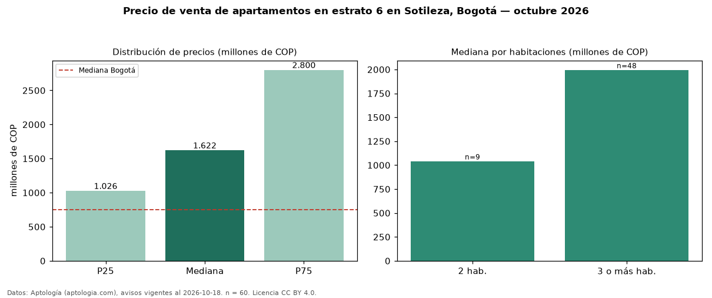

Precio de venta de apartamentos en estrato 6 en Sotileza, Bogotá — octubre 2026
En Sotileza (localidad de Suba), Bogotá, la mediana de precio de venta de apartamentos en estrato 6 es COP 1,62 mil millones, según 60 avisos vigentes. Frente a la mediana de toda la vivienda de estrato 6 de Sotileza (COP 1,87 mil millones, n = 183), queda 13 % por debajo; este segmento reúne el 33 % de esos avisos. Por metro cuadrado, la mediana es COP 7,28 millones/m² (n = 60), 9 % por encima del conjunto de referencia (COP 6,68 millones/m²). La mitad central de los avisos va de COP 1,03 mil millones a COP 2,80 mil millones (razón 2,7), una dispersión alta. El área mediana anunciada es 207 m². El segmento con más oferta es el de 3 o más habitaciones (48 avisos, mediana COP 2,00 mil millones); pasar de 2 habitaciones a 3 o más habitaciones cambia la mediana +92 %. La administración mediana declarada es COP 1,35 millones al mes (n = 55). La mediana de todos los apartamentos en venta de Bogotá es COP 750 millones (+116 % de diferencia). Datos: Aptología (aptologia.com), CC BY 4.0 — https://www.aptologia.com/venta/bogota/sotileza. Archivos: PDF, CSV con las cifras y gráfica PNG.

| Avisos únicos | 60 |
|---|---|
| Percentil 25 | COP 1.026.282.850 |
| Mediana | COP 1.621.500.000 |
| Percentil 75 | COP 2.800.000.000 |
| Mediana por m² | COP 7.278.653 |
Fuente: avisos vigentes de portales inmobiliarios recopilados por Aptología, deduplicados (mínimo 30 avisos únicos por celda). Precios pedidos, no cerrados. Fecha: 2026-10-18.